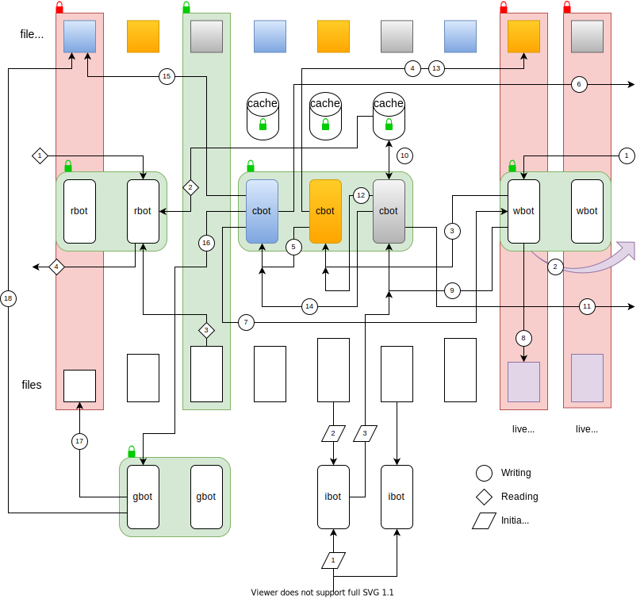

Ozone at a glance
Ozone is a key-value database designed to be capable of high throughput. It works by appending key-value pairs to operating system files, and efficiently using available resources by deleting old file values and retaining as much data in faster volatile memory as possible. It was inspired by Bitcask.
Design
Ozone assigns data randomly across one or more completely independent file directories, or zones, based on key hashes. Key-value pairs along with metadata are appended to data files. Each data file has an accompanying index file to which each key and data file location are appended. These are not essential but help with data integrity and speeding up initialisation and rezoning. Rezoning is the process of mapping data from one set of zones to another. Files are limited in size and accumulate or vanish over time, depending on the extent to which values are replaced.
For each zone, two main shared data structures are maintained in volatile memory:
- Every file is associated with a file state which includes a map of the position of data.
- A set of data caches maps keys to the most current file location, and possibly to an in-memory copy of the value.
Each zone is associated with pools of worker threads (bots) dedicated to performing specific operations:
- Cache bots (cbots) correctly schedule operations.
- Writer bots (wbots) append key-value data to live files.
- Garbage bots (gbots) perform garbage collection on files as requested by cbots.
- Reader bots (rbots) retrieve values.
- Initialisation bots (ibots) read data from files and fill the file states and caches during start up and rezoning.
The number of caches is tied to the number of cbots. By adjusting the number of zones and bots of each kind manually or automatically, performance can be tuned for the workload. The zone file states are shared by the cbots, gbots and rbots, while cbots share their associated caches with rbots. The system relies on buffered message passing and locking of shared data, and aims to permit flexibility in pursuit of minimal wait times.
In the accompanying diagram, the caches consist of keys associated with a file location and possibly a value, and file states are associated with files. Various configuration options including the number of zones and the number of worker bots in each zone can be adjusted dynamically.

Writing
- A randomly chosen wbot is asked to store a key-value pair. A hash of the key determines its association with a cbot.
- If the live file size is expected to grow beyond the configured limit, the wbot starts a new live file in the sequence. If not, the wbot skips to database insertion.
New live file
- The wbot advises the cbot of the live file change.
- The cbot downgrades the file state from live, allowing its garbage to be collected.
- The cbot advises the cbot associated with the new live file number (which could be itself) to create a new file state.
- The file state for the new live file is created.
- The cbot informs the wbot via a responder that the new live file state is ready.
Database insertion
- The wbot appends the data to its live file.
- With the data committed to a persistent form in the live file, the wbot selects a cbot using the key and sends the data and its location.
- The key-selected cbot inserts the file location and value into its cache. If the data is new, it collects the file location of any existing value as old data. If the data for insertion is itself old, it is treated as old data.
- This cbot advises the original caller via a responder that the data has been successfully committed to file and a cache.
- This cbot selects a cbot using the file location of the new data (which could be itself) and asks it to update the file state.
- The file-selected cbot adds the new location to the file state data map.
- The key-selected cbot selects a cbot using the file location of the old data (which could be itself) and asks it to schedule a deletion.
- The file-selected cbot schedules the old data for deletion and checks to see if the file requires garbage collection.
By allocating file state actions to specific cbot queues, we can avoid ordering problems such as might occur if a new live file state has not yet been created, or when old data in a file state data map is scheduled for deletion before it has been inserted.
Garbage collection
- The cbot instructs a random gbot to perform garbage collection on the file.
- The gbot waits for a write lock (depicted in red) and performs the transcription to remove old file data, re-creating the index file.
- The gbot resets the file state and releases its lock.
Over time, garbage collection can lead to complete deletion of files.
Reading
- A randomly chosen rbot is asked to retrieve the value for a specified key.
- The rbot waits for the lock on the key-selected cache and reads the entry.
- If there is no value and only a file location, the rbot waits for the lock for reading (depicted in green) on the file and reads the value.
- The rbot returns the value to the caller.
Initialisation
- A randomly chosen ibot is asked to cache an index file or the associated data file.
- The ibot reads the index file, or if there is a problem or no such file exists, it reads the data file and creates an index file. Unlike wbots, ibots buffer file writing.
- The ibot uses the same insertion pipeline starting with step 9 of the writing process, that is, sending the data and file location to the key-selected cbot.